-
1961
BJ210
在设计之初，BJ210参考了威利斯吉普的一些基本特征，所以可以看到威利斯吉普的影子。
后来，部分参加过抗美援朝的首长和高级将领观看并试坐了BJ210后提出一些意见，包括：车身较小，运载性能较差，车身只有两个车门，在实战中不利于后排人员逃生，并希望性能优于苏联的“嘎斯69”。
- 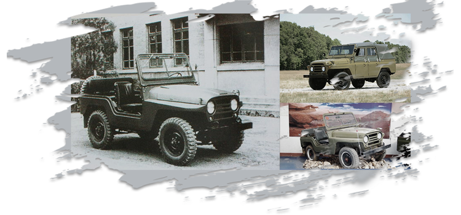
-
1966
BJ212
北京吉普212是中国最早生产的乘用车，诞生于1965年。从新中国第一代领导人毛泽东搭乘敞篷车“212”检阅开始，至今30年畅销不衰，市场保有量达60万辆，累计产量。
动力上BJ212吉普车搭载了一台排量为2445cc的直列四缸汽油发动机，采用四轮驱动，前后鼓式刹车，与发动机匹配的是一台3速手动变速箱，其最大功率为75马力，最大扭矩为172牛·米，车重1395kg，最快时速可达120-130公里/小时，百公里耗油14L。
- 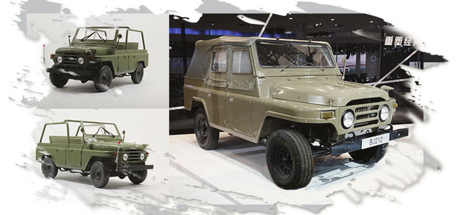
-
2007
北汽勇士军车
“北京勇士”是一款国产ORV，由北京吉普汽车有限公司集20年经验与不断创新的精神，自主开发的，拥有完全自主知识产权的中国21世纪0.5吨/0.75吨级越野车。
北京勇士标志着继我国第一代军车“BJ212”系列之后，北京吉普再次成为独家定点研制和生产第二代军车的企业。勇士分为5乘员和8-10乘员两种车型。
- 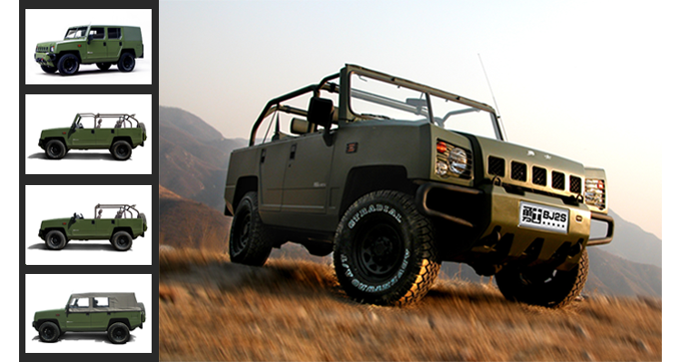
-
2013
BJ40上市
作为一款自主研发的SUV车型，BJ40平直硬朗的线条勾勒出了方正粗犷的车身；前格栅5方孔设计是北京汽车“越野世家”标志性符号，夸张的前后保险杠和突出的轮眉更为BJ40赋予了独特的野性之美。
-

-
2015
北京勇士改进军车
北京勇士军用越野车产品线满足了部队各级指挥员指挥、巡逻等工作。作为半个多世纪的军车供应商，从BJ212开始，北京汽车在相当长的历史年代里承载了国人对“越野车”的全部印象。
进入新世纪，勇士作为我军正式列装车辆，从最北端极寒的漠河到最南端潮热的海南，从塔克拉玛干沙漠到西藏5000米雪域高原，在多种气候和地形条件下，出色的保障了部队勤务，受到了包括中央军委、军队以及武警部队各级领导的高度肯定。
- 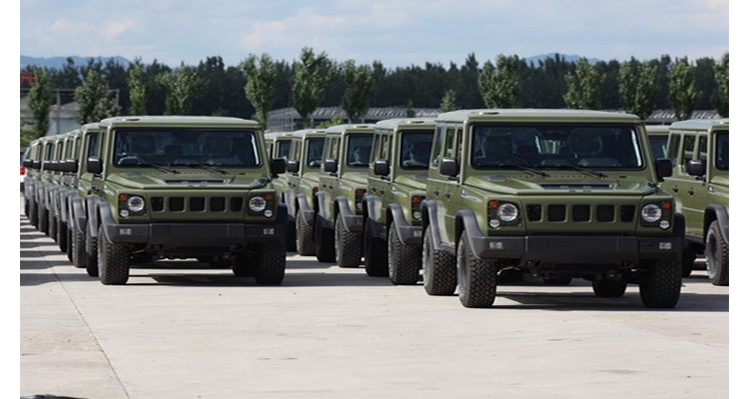
-
2016
环塔（国际）拉力赛
中国环塔（国际）汽车拉力赛全称环塔克拉玛干汽车摩托车越野拉力赛暨中国越野系列赛新疆站，该赛创办于2005年，为每年举行的国家A级体育运动比赛项目。
2011年起，环塔拉力赛正式升级为国际级赛事，现已成功举办10届，是亚洲第一、国内最大的汽车、摩托车、卡车同场竞技的权威品牌越野国际赛事。北京汽车作为参赛越野车领域的“国粹”，北汽品牌的再次参与无疑吸引了众多关注。
- 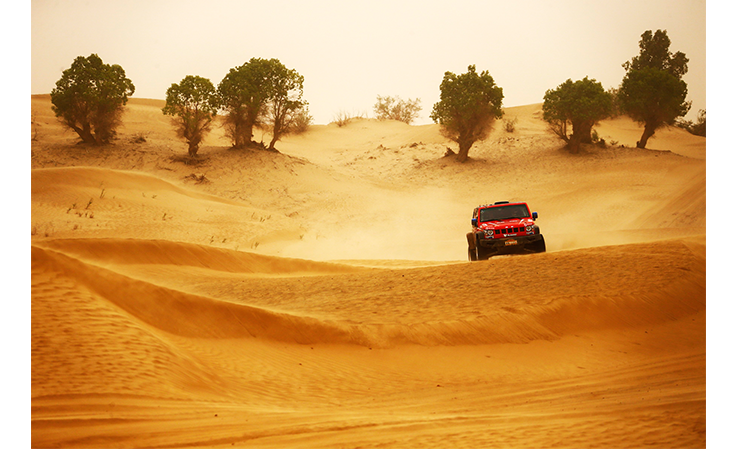
-
北京(BJ)20 北京(BJ)40四门版 北京(BJ)80 系列上市
北京(BJ)20作为一款以80后、90后为消费人群的年轻化车型，作为北京汽车越野世家继BJ80、BJ40和BJ40L之后又一用心之作，在2016年9月10日正式上市。
- 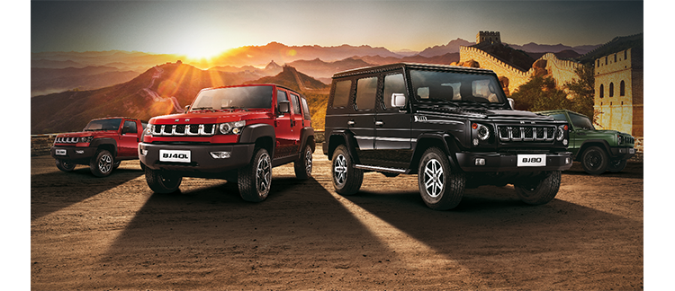
-
使命召唤“冰雪任务”
2016年12月26日，北京越野世家继续遵从内心的召唤，远赴极寒之地——阿尔山，穿越林海雪原，对决极寒冰雪。“唯越野 行无疆 越野世家使命召唤之冰雪任务”的大幕随机开启。这是一场旅程、更是一场挑战。召集越野人共赴壮丽险峻的阿尔山，驾驭冰雪，沸雪燃情，决战艰险！
- 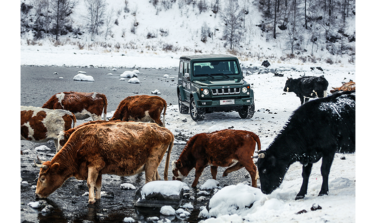
-
2017
1月北汽集团独家冠名《朗读者》
2017年1月18日，由北汽集团独家冠名的中央电视台大型朗读类真人秀节目《朗读者》签约发布会在京举行。这是北汽集团与中央电视台具有里程碑意义的历史性合作。
- 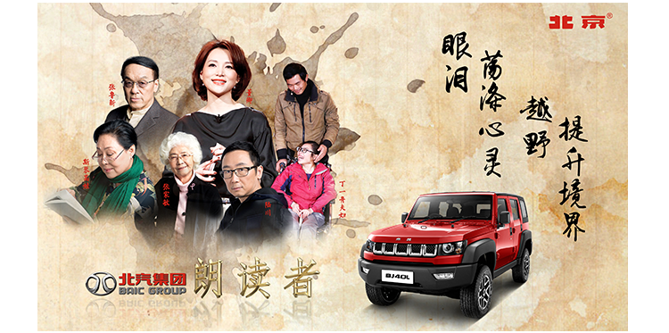
-
4月38°向上人生
本次活动主题“38°向上人生”——38°，是“发烧”的温度，一如对自由的“热”爱，对越野的“热”情，用燥“热”的身体攀登人生之巅！
37°的接近角让北京汽车(BJ)系列傲视群雄，而剩下的1°则是一种“一度向上”的人生精神，让38°的仰角开启向上人生。
- 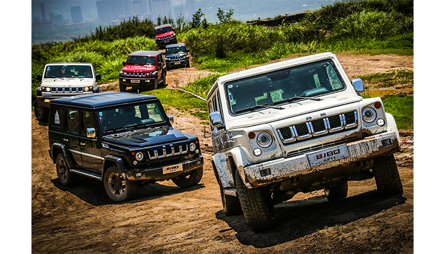
-
6月环塔拉力赛
2017年6月10日至22日，中国环塔（国际）拉力赛在新疆举行，从塔城出发，穿越北疆、南疆、东疆，至哈密收车，赛程总长度2828公里，特殊赛段10段。
参赛车队超过48支，参赛汽车、卡车总数超过100辆。在这场全亚洲参赛人数最多、参赛车辆最多、赛道距离最长的越野拉力赛中，北京汽车越野世家车队阵容强大，携北京(BJ)40战车，出战赛事最强级别T1组，成绩斐然！
- 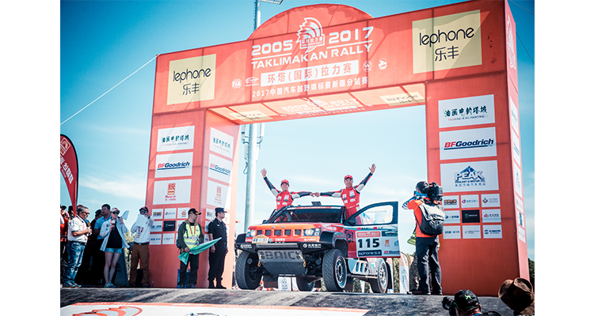
-
7月香港回归20周年
2017年7月1日，香港回归祖国20周年，中共中央总书记、国家主席、中央军委主席习近平于6月29日抵达香港，出席了“庆祝香港回归祖国20周年”系列活动，并于6月30日检阅了驻港部队。
全部到场的六款领导所乘车型，五款为德系和日系车型，北汽BJ80成为唯一一款国产汽车领导专用车型，并且作为最重要的阅兵专用车，搭载习主席检阅了整个驻港部队，为BJ80车型带来了越野车中的至高荣誉！
- 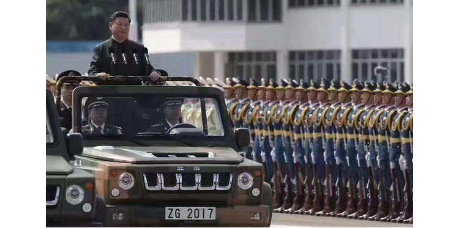
-
7月加盟《战狼2》再次走向世界
同年7月，北京(BJ)40作为《战狼2》中的赞助用车出现在影片当中，时尚的设计、专业的越野性能、可靠安全的卓越表现，俘获了全世界的越野粉丝。
2017年苏州十一车展上，《战狼2》吴京战车亮相车展，而高性价比更是惊艳全场！
-

-
7月闪耀丝绸之路拉力赛
7月22日，2017年丝绸之路拉力赛在全球车迷的关注中举行了收车仪式，这场跨越欧洲、亚洲，穿越三个国家的世纪之战在古都西安尘埃落定。
北京汽车越野世家车队外援克里斯蒂安.拉维艾耶/加辛.让.皮埃尔车组以42小时51分04秒的成绩位列第二。他们刷新了中国车队在国际顶级越野拉力赛的最佳成绩！同时，他们驾驶的108号BJ40L赛车也成为2017年丝绸之路拉力赛最快的四驱赛车！队友鹿丙龙/沙贺车组位列第六。他们是四驱赛车中最快的中国车组！
- 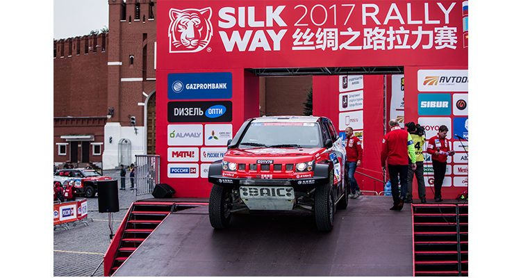
-
8月八一建军节90周年
8月1日，在北京凯泽汽车运动体验中心，北京(BJ)80建军90周年纪念版正式上市，新车基于现款北京(BJ)80 2.3T车型打造，在车辆外观、内饰等方面进行了全面升级，推出一款自动变速箱车型，全国限量200台。
- 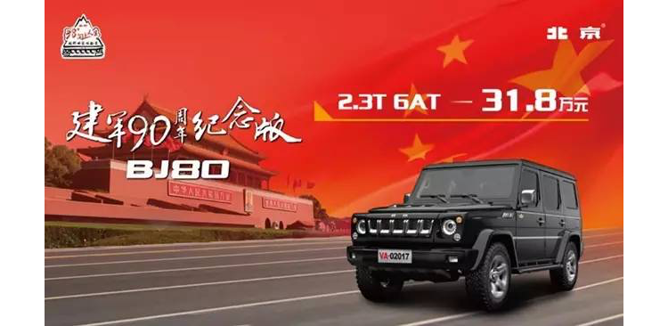
-
9月北京汽车闪耀COC晴隆站，包揽领奖台
9月21日，2017晴隆“二十四道拐”中国汽车场地越野锦标赛（COC）展开了决赛的争夺，北京汽车越野世家车队自排位赛起，一路高歌猛进，以近乎完美的成绩闪耀晴隆史迪威小镇赛车场，收获三冠。
从四月的四川南溪，到北京怀柔，再到山西大寨、陕西韩城，北京汽车在这项中国最高级别越野赛事的处子秀上连战连捷，成为COC当之无愧的霸主，让“越野世家”的旗帜在场地越野赛场高高飘扬！
- 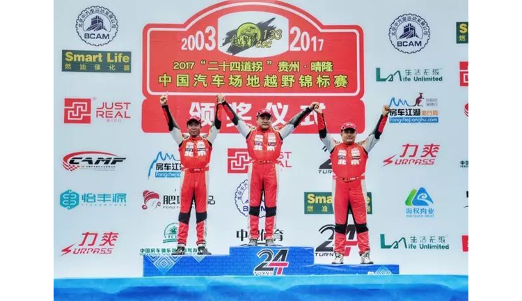
-
9月阿拉善英雄会
2017年第十二届阿拉善英雄会在腾格里沙漠拉开序幕，阿拉善英雄会作为国内最热闹、最硬派的越野车聚会之一，每年都引来各路英雄云集，切磋技艺。
而北京汽车也在10月2日晚举办了开营仪式，与阿拉善的各路英豪交流越野心得！
- 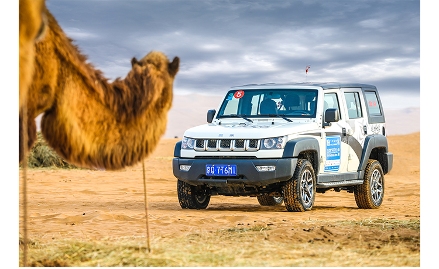
-
12月北京BJ(20) 护航《香巴拉深处》纪录片
12月19日，官方发布《香巴拉深处》预告片，北京汽车作为指定官方用车。其硬朗的外型吸引了无数人的目光。
刚硬厚重的型格外表，搭载1.5T发动机与6MT或CVT的变速箱，兼顾潮流与动力，天生适合驰骋于复杂地形；承载式车身加上四轮独立式悬架让车辆行驶舒适性达到全新高度；
2670mm轴距让它拥有宽裕的空间，无论横向还是纵向都毫不局促，正适合摄制组携带大量拍摄器材与物资；
ESP车身稳定系统与完备的安全型护则保证了驾驶安全。为拍摄全程护航，保证摄制组一路安全无忧！
- 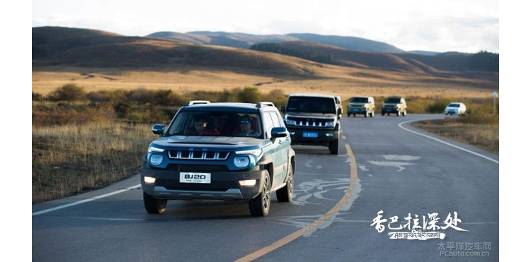
-
2018
1月使命召唤“雨林任务”
丛林里原生态的土路，因常年被绿荫覆盖及腐蚀的叶子铺满，所以异常的湿滑，车子行进过程中会难以避免的打滑。柴油版BJ40系列防滚架可承受22240N，相当于承受2.2吨的压力，可轻松应对。
雨林环境错综复杂，暗藏杀机、险象环生，两侧植物会严重干扰视线，路面经常暗沟暗坎，柴油版BJ40系列专业四驱系统，升级冠军版分动箱，让性能更加卓越，应对复杂路况更加的游刃有余！
- 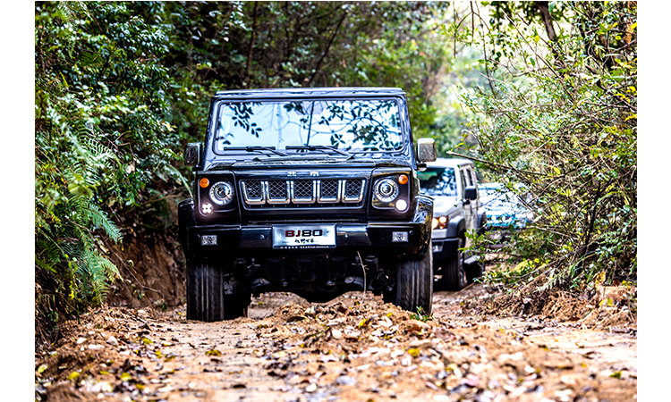
STORY
CONTINUES
...